학습 목표 (Learning Objectives)
- ✓지층 형성의 선후 관계를 결정짓는 지사학의 법칙들을 활용하여 지층의 상대 연령을 비교할 수 있다.
- ✓방사성 동위원소를 이용한 광물의 반감기 자료로 암석의 절대 연령을 구할 수 있다.
핵심 개념 체크리스트
학습을 마친 개념은 직접 체크해보세요!
2026 사대부고 고2 지구과학 자체 교재 원문 기반
동기 유발 · 생각해보기
수업 시작 전 핵심 질문
Q. 실제 야외에서 관찰하는 지층은 휘어지고 끊어지며 마그마가 뚫고 들어간 복잡한 구조를 보인다. 이렇게 복잡한 지층에서 어떤 암석이 먼저 만들어졌고 몇억 년 전에 생성되었는지 어떻게 알아낼 수 있을까?
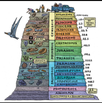

💡 먼저 스스로 이유를 추론해 본 뒤 버튼을 눌러 확인해보세요!
✨ 과학적 해설 및 모범 답안
'현재는 과거의 열쇠이다'라는 제임스 허튼의 동일 과정의 원리를 바탕으로 지사학의 5대 법칙을 적용해 선후 관계(상대 연령)를 파악하고, 암석 속 광물에 포함된 방사성 동위원소의 일정한 반감기를 측정하여 정확한 생성 연대(절대 연령)를 계산합니다.
핵심 개념 1
1. 지사학의 5대 법칙 (Laws of Stratigraphy)
(1) 수평 퇴적, 지층 누중, 부정합, 관입, 동물군 천이의 법칙
- •① 수평 퇴적의 법칙: 퇴적물이 쌓일 때는 중력의 영향으로 수평면과 나란하게 퇴적된다. 만약 지층이 기울어지거나 휘어져 있다면 퇴적된 이후에 지각 변동을 받은 것이다.
- •② 지층 누중의 법칙: 지층이 역전되지 않았다면 아래쪽에 있는 지층이 위쪽에 있는 지층보다 먼저 퇴적되었다. (지층의 역전 여부는 점이층리·사층리·연흔·건열 등 퇴적 구조로 판단한다!)
- •③ 부정합의 법칙: 부정합면을 경계로 상하 지층 사이에는 오랜 시간적 공백(퇴적 중단 및 침식 기간)이 존재하며 기저 역암이 자주 발견된다.
- •④ 관입의 법칙: 마그마가 주변 지층을 뚫고 들어간 경우, 관입한 화성암은 관입당한 주변 암석보다 나중에 생성되었다.
- •⑤ 동물군 천이의 법칙: 오래된 지층에서 새로운 지층으로 갈수록 더욱 진화하고 복잡한 생물 화석이 산출되며, 같은 시기에 퇴적된 지층에서는 같은 표준 화석이 산출된다.
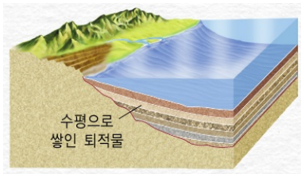
" class="max-h-72 w-auto object-contain rounded-lg group-hover:scale-[1.02] transition duration-300 cursor-zoom-in" onclick="openLightbox(this.src, '교재 그림: <수평 퇴적의 법칙>')" loading="lazy" />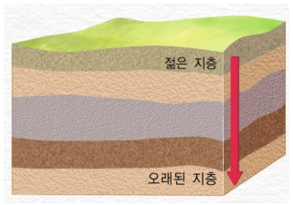
" class="max-h-72 w-auto object-contain rounded-lg group-hover:scale-[1.02] transition duration-300 cursor-zoom-in" onclick="openLightbox(this.src, '교재 그림: <지층 누중의 법칙>')" loading="lazy" />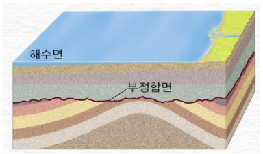
" class="max-h-72 w-auto object-contain rounded-lg group-hover:scale-[1.02] transition duration-300 cursor-zoom-in" onclick="openLightbox(this.src, '교재 그림: <부정합의 법칙>')" loading="lazy" />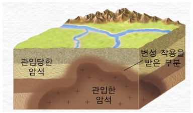
" class="max-h-72 w-auto object-contain rounded-lg group-hover:scale-[1.02] transition duration-300 cursor-zoom-in" onclick="openLightbox(this.src, '교재 그림: <관입의 법칙>')" loading="lazy" />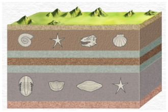
" class="max-h-72 w-auto object-contain rounded-lg group-hover:scale-[1.02] transition duration-300 cursor-zoom-in" onclick="openLightbox(this.src, '교재 그림: <동물군 천이의 법칙>')" loading="lazy" />(2) ⭐ 관입 vs 분출 후 퇴적(부정합) 구별하기 (교재 p.30 핵심 비교)
- •화성암 위아래에 퇴적층이 있을 때, 화성암 상부 경계면의 접촉 변성(변성 작용) 유무와 기저 역암 유무로 생성 순서를 구별한다!
- •왼쪽 그림 (관입): 화성암 $B$ 위아래의 $A$층과 $C$층 모두에 접촉 변성 흔적(빗금)이 존재 ➔ $A$와 $C$가 모두 쌓인 뒤 마그마 $B$가 관입함 ➔ 생성 순서: $A \rightarrow C \rightarrow B$
- •오른쪽 그림 (분출 후 퇴적): 화성암 $B$의 아래쪽($A$층)에만 접촉 변성 흔적이 있고, 위쪽($C$층 하부)에는 $B$의 조각(기저 역암)이 포함됨 ➔ $A$ 퇴적 후 용암 $B$가 분출·냉각된 뒤 그 위에 $C$가 퇴적됨 ➔ 생성 순서: $A \rightarrow B \rightarrow C$
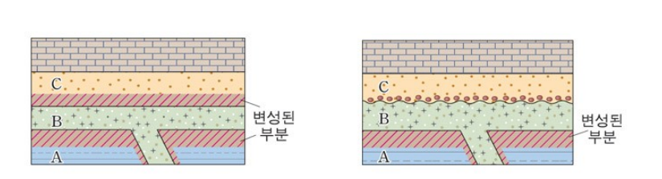
" class="max-h-72 w-auto object-contain rounded-lg group-hover:scale-[1.02] transition duration-300 cursor-zoom-in" onclick="openLightbox(this.src, '교재 p.30 비교 그림: <왼쪽: 관입(A→C→B) vs 오른쪽: 분출 후 퇴적(A→B→C)>')" loading="lazy" />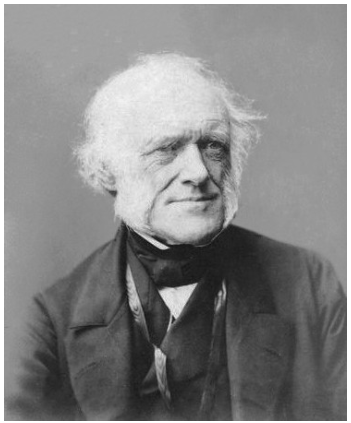
" class="max-h-72 w-auto object-contain rounded-lg group-hover:scale-[1.02] transition duration-300 cursor-zoom-in" onclick="openLightbox(this.src, '교재 그림: <제임스 허튼(James Hutton)과 동일 과정의 원리>')" loading="lazy" />
핵심 개념 2
2. 지층의 상대 연령과 지층 대비
(1) 지질 단면도의 생성 순서 결정과 지층 대비 (교재 p.31)
- •암상에 의한 대비 (가까운 거리): 지층을 이루는 암석의 종류와 퇴적 구조를 비교하여 대비한다. 특히 화산 폭발로 짧은 시간 동안 넓은 지역에 쌓인 응회암층이나 석탄층을 열쇠층(건층, Key bed)으로 활용한다.
- •화석에 의한 대비 (먼 거리 가능): 동물군 천이의 법칙에 따라 생존 기간이 짧고 분포 면적이 넓은 표준 화석을 기준으로 멀리 떨어진 지역의 지층을 대비한다.
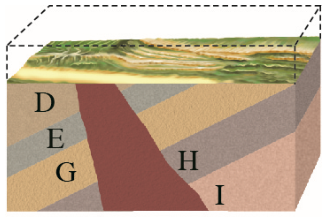
" class="max-h-72 w-auto object-contain rounded-lg group-hover:scale-[1.02] transition duration-300 cursor-zoom-in" onclick="openLightbox(this.src, '교재 p.31 단면도 1: <지층 생성 순서 연습 (왼쪽)>')" loading="lazy" />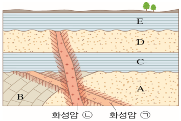
" class="max-h-72 w-auto object-contain rounded-lg group-hover:scale-[1.02] transition duration-300 cursor-zoom-in" onclick="openLightbox(this.src, '교재 p.31 단면도 2: <지층 생성 순서 연습 (오른쪽)>')" loading="lazy" />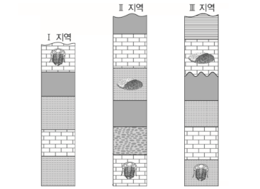
" class="max-h-72 w-auto object-contain rounded-lg group-hover:scale-[1.02] transition duration-300 cursor-zoom-in" onclick="openLightbox(this.src, '교재 p.31 적용해보기 2: <표준 화석을 이용한 Ⅰ~Ⅲ 지역의 지층 대비>')" loading="lazy" />
핵심 개념 3
3. 방사성 동위원소와 절대 연령 (Absolute Age)
(1) 반감기 공식과 주요 방사성 동위원소 (교재 p.32~33)
- •반감기($T$): 불안정한 방사성 동위원소(모원소)가 붕괴하여 안정한 원소(자원소)로 변할 때, 모원소의 양이 처음의 절반($1/2$, $50\%$)으로 줄어드는 데 걸리는 시간으로 온도나 압력 변화와 관계없이 항상 일정하다.
- •반감기 수식: 처음 모원소의 양을 $N_0$, 반감기를 $T$, 경과 시간(절대 연령)을 $t$라 할 때 남아 있는 모원소의 양 $N$은 다음과 같다.
$$N = N_0 \times \left(\frac{1}{2}\right)^{\frac{t}{T}}, \quad \frac{\text{모원소}(N)}{\text{자원소}(N_0 - N)} = \frac{1}{2^n - 1} \quad \left(n = \frac{t}{T} = \text{반감기 횟수}\right)$$ - •⭐ 절대 연령 측정 시 주의사항:
▸ 화성암: 마그마가 식어 광물이 정출된 암석의 생성 시기를 정확히 나타낸다.
▸ 변성암: 변성 작용으로 재결정이 일어난 변성 시기를 나타낸다.
▸ 퇴적암: 퇴적물 입자(쇄설물)가 떨어져 나온 근원암의 생성 시기가 측정되므로, 퇴적암의 퇴적 시기는 화성암의 관입/분출 연대와 지사학 법칙을 결합해 간접적으로 구한다.
| 반감기 횟수 (n = t/T) | 남은 모원소 비율 | 생성된 자원소 비율 | 모원소 : 자원소 비 | 절대 연령 (t) |
|---|---|---|---|---|
| 0회 (처음) | 100% (1) | 0% | 1 : 0 | 0년 |
| 1회 반감기 | 50% (1/2) | 50% (1/2) | 1 : 1 | $1T$ |
| 2회 반감기 | 25% (1/4) | 75% (3/4) | 1 : 3 | $2T$ |
| 3회 반감기 | 12.5% (1/8) | 87.5% (7/8) | 1 : 7 | $3T$ |
| 4회 반감기 | 6.25% (1/16) | 93.75% (15/16) | 1 : 15 | $4T$ |
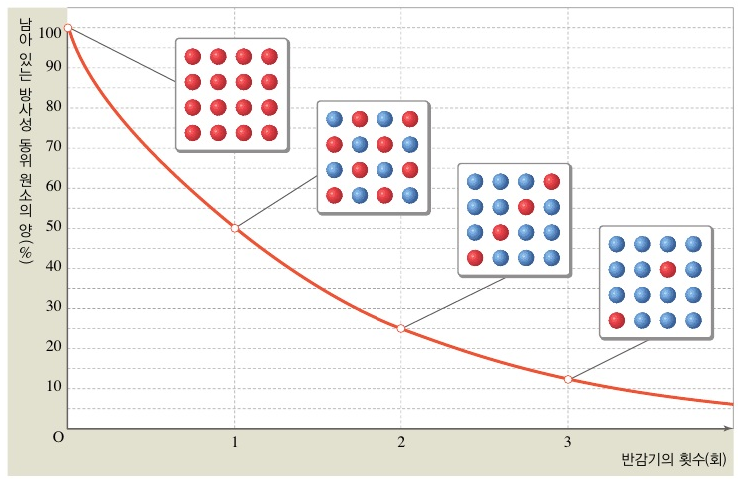
" class="max-h-72 w-auto object-contain rounded-lg group-hover:scale-[1.02] transition duration-300 cursor-zoom-in" onclick="openLightbox(this.src, '교재 그림: <방사성 동위원소의 붕괴 곡선>')" loading="lazy" />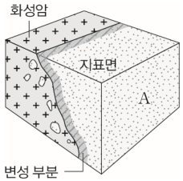
" class="max-h-72 w-auto object-contain rounded-lg group-hover:scale-[1.02] transition duration-300 cursor-zoom-in" onclick="openLightbox(this.src, '교재 p.33 문제 적용: <화성암 (가)와 (나)가 포함된 지질 단면도>')" loading="lazy" />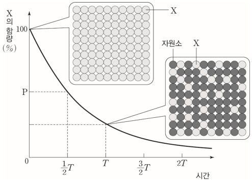
" class="max-h-72 w-auto object-contain rounded-lg group-hover:scale-[1.02] transition duration-300 cursor-zoom-in" onclick="openLightbox(this.src, '교재 p.33 그래프 이해하기: <방사성 동위원소 X의 붕괴 곡선>')" loading="lazy" />
Interactive Checkpoints
클릭하면 교재 빈칸 정답과 해설이 나타납니다
단원 개념 적용하기 & 확인 문제
Q1
교재 p.31 적용해보기 1 & 2: 암상에 의한 대비에서 가장 좋은 열쇠층(건층)이 되는 암석은 무엇이며, 화석에 의한 대비에서 사용되는 화석의 조건은 무엇인가?
모범 답안 및 해설
암상에 의한 대비에서는 화산재가 넓은 지역에 짧은 시간 동안 쌓여 형성된 응회암층(또는 석탄층)을 열쇠층으로 사용합니다. 화석에 의한 대비에서는 생존 기간이 짧고 분포 면적이 넓은 표준 화석을 사용합니다.
Q2
교재 p.33 문제에 적용해보기 정답: 방사성 동위원소의 반감기가 1억 년일 때, 모원소:자원소 비율이 (가)=50%:50%, (나)=25%:75%이고, 지층 생성 순서가 (나) ➔ 지층 A ➔ (가) 관입이라면 (가), (나)의 절대 연령과 지층 A의 연령 범위는?
모범 답안 및 해설
• (가) 화성암의 절대 연령: 모원소가 50%(1:1)이므로 반감기 1회 경과 ➔ 1억 년• (나) 화성암의 절대 연령: 모원소가 25%(1:3)이므로 반감기 2회 경과 ➔ 2억 년
• 지층 A의 연령 범위: (나) 위에 퇴적되고 (가)에 의해 관입당했으므로 1억 년 ~ 2억 년 사이
• 교재 p.33 하단 그래프 답: 1. $P = 25\%$, 2. $T = 1\text{억 년}$, 3. 모원소 6.25%($1/16$, 반감기 4회)일 때 걸린 시간 = 4억 년